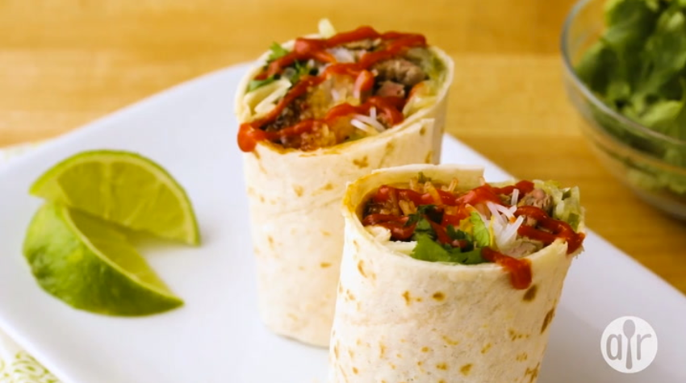

Phoritto
Home

Description
Try this bold twist on Vietnamese-style cuisine with pho-inspired burritos packed with tender steak, rice noodles, savory-sweet sauce, and fresh Thai basil. A flavorful meal anytime!
Prep Time:
25 mins
Cook Time:
20 mins
Total Time:
45 mins
Servings:
8
Ingredients
-
1 tablespoon vegetable oil
-
1 ½ onion, thinly sliced
-
3 jalapeño peppers, thinly sliced
-
2 (14 ounce) cans beef-flavored pho broth
-
1 pound frozen ribeye steak, thinly sliced
-
10 ounces thin rice noodles (vermicelli-style)
-
8 burrito-size flour tortillas
-
1 (8 ounce) jar chili-garlic sauce
-
1 (8 ounce) package bean sprouts
-
2 tablespoons hoisin sauce, or to taste
-
1 bunch Thai basil
-
1 bunch cilantro
-
1 lime, sliced
Steps
-
Heat oil in a large saucepan over medium heat. Add onions. Cook and stir until softened, about 5 minutes. Add jalapeños. Cook and stir until dark green, about 5 minutes. Remove from heat.
-
Heat broth in a saucepan over medium-high heat. Cook batches of ribeye slices in hot broth until medium-rare, 10 to 20 seconds per batch.
-
Bring a large pot of water to a boil. Add noodles and cook until tender, 3 to 5 minutes. Drain.
-
Place tortillas on a microwave-safe plate. Heat in the microwave until warm, 20 to 25 seconds.
-
Divide onion and jalapeño mixture, ribeye slices, noodles, chili-garlic sauce, bean sprouts, hoisin sauce, Thai basil, and cilantro among warmed tortillas. Spoon broth on top. Fold opposing edges of tortillas over filling and roll up into burritos. Serve with lime slices.